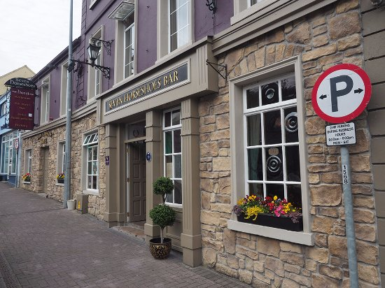
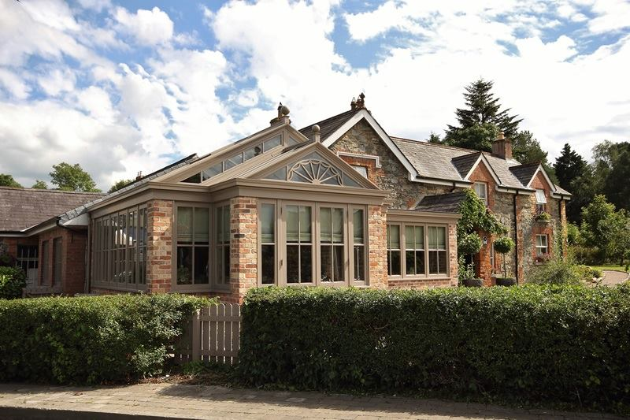
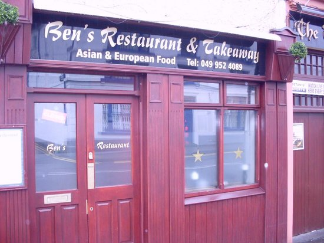

The community
Homepage
Belturbet has a wide range of shops, restaurants, buisness and clubs. one of the most popular hotels is the Seven Horse Shoes owned my Francie Cahill situated in the middle of the town.The Hotel has 10 en-suite double bedrooms with luxurious accommodation, excellent dining facilities in the renowned "Stables" Restaurant Belturbet.
They also cater for Weddings and all other social functions.
Business Name: Seven Horse Shoes Hotel & Restaurant
Category: Accommodation, Food & Drink, Hotel Accommodation, Restaurants
Phone Number: 049 9522166
Business Name: Belturbet Railway Station Masters house
Category: Accommodation, Selfcatering Accommodation
Business Name: Brankfield Cottage
Category: Accommodation, Selfcatering Accommodation
Phone Number: +353 87 2310349
Business Name: Bens Restaurant
Phone Number: 049 9524089
Business Name: The Olde Post Inn
Category: Accommodation, Bed and Breakfast Accommodation, Food & Drink, Restaurants
Business Name: Bedrock Cafe
Category: Food & Drink, Restaurants
Phone Number: 049 9522130


